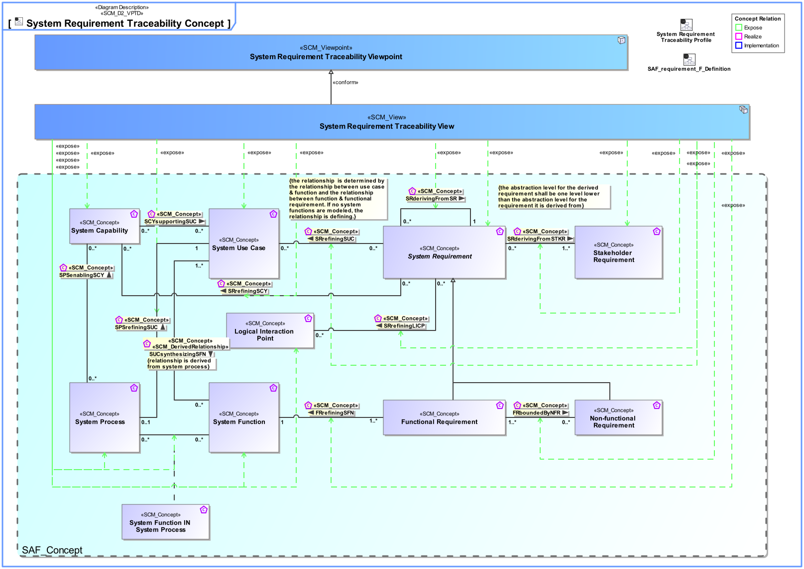
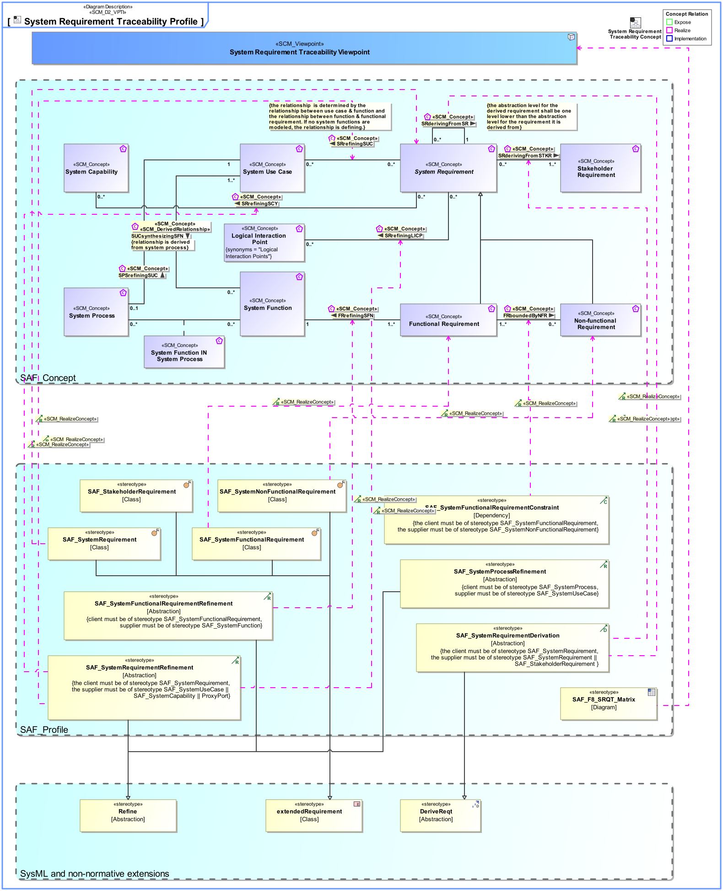

F8_SRQT System Requirement Traceability Viewpoint
| Domain | Aspect | Maturity |
|---|---|---|
| Functional | Traceability & Mapping |

The System Requirement Traceability Viewpoint specifies for every System Requirement the traceability to the functional domain level
The System Requirement Traceability Viewpoint supports the “System Requirements Definition Process” activities of the INCOSE SYSTEMS ENGINEERING HANDBOOK 2015 [§4.3] and contributes to the System Requirements Traceability. The System Requirement Traceability Viewpoint also contributes to the System Requirements Verification and Traceability Matrix (RVTM).
A dependency matrix featuring relationships for every System Requirement to the functional domain level
The following Stereotypes / Model Elements are used in the Viewpoint:
The Diagram shows the concepts exposed by the viewpoint, and related concepts if necessary.

| Concept | Documentation |
|---|---|
| System Capability | 1) A System Capability is an operation or task that performs an action to produce a specific performance-based outcome. NOTE that a system capability represents the potential to perform an action. In contrast, an operational capability may integrate several physical system capabilities to produce a specific outcome to achieve a mission objective. [Wasson2006, SystemAnalysis+Design+Development] 2) System Capabilities, as system assets, characterize the mechanical, electrical, optical, or processing features that enable a system to function, process mission resources, make decisions, and achieve a required level of success based on performance. A system capability is broader in scope than simply a functional element (and performance bounding elements), especially in large, complex ecosystems. It represents a physical potential - strength, ability, endurance - to perform an outcome-based action for a given duration under a specified set of operating environment conditions. [Wasson2006, SystemAnalysis+Design+Development] Aliases: UAF::Capability NAF4::Capability |
| Logical Interaction Point | Specifies the existence of an interaction point on Logical Level. |
| FRboundedByNFR | Specifies the fact that a Non-Functional Requirement constrains Functional Requirements. |
| FRrefiningSFN | Specifies the fact that a System Function is refined by Functional Requirements. |
| SRderivingFromSR | Specifies the fact that System Requirements are derived from a Stakeholder Requirement. Note: This is the relationship of requirements of different architectural levels. When the team responsible for the subsystem has direct access to the full upstream requirements set, then no subcontractor relationship needs to be established. |
| SRderivingFromSTKR | Specifies the fact that a System Requirement is derived from a Stakeholder Requirement. Note: It may be used in a customer supplier relationship situation and supports the V Model concept of "External Unit Specification". See [VXT]. |
| SRrefiningLICP | Specifies the fact that a Logical Interaction Point is refined by System Requirements. |
| SRrefiningSCY | Specifies the fact that a System Capability is refined by System Requirements. |
| SRrefiningSUC | Specifies the fact that a System Use Case is refined by System Requirements. |
| System Requirement | System Requirements specify System Functions, non-functional properties, or constraints of the System. |
| Stakeholder Requirement | A Stakeholder Requirement is a Requirement imposed by a Stakeholder. Stakeholder Concerns are refined by Stakeholder Requirements applicable for the SOI. The Stakeholder Requirements are a result of discussions and agreements of how the SOI addresses the Concerns of the respective Stakeholder. |
| SPSrefiningSUC | Specifies the fact that a System Use Case is refined by one System Process. |
| System Function IN System Process | Specifies the fact that a System Function is used in a System Process. |
| System Function | Specifies the fundamental action or task that have to take place in the System in accepting and processing the inputs and in processing and generating the outputs. A System Function * accepts input from the System boundary * exposes its output at the System boundary * changes the System's State * is dependent on System's State Note: A System Function does not need to expose observable output, when it changes the System's state in a way that is observable by other system functions. Furthermore, a System Function does not need to accept any input from the system boundary, when it is dependent on the System State, which in turn is changeable by other System Functions. |
| System Process | Specifies the fact that a System Process captures system behavior as a specific sequence of actions or tasks, and system exchanges including information, materials, energy, etc. |
| System Use Case | The System Use Cases are a table of content of the services provided by the System of Interest to its System Actors. A System Use Case is only the abstract of the depicted System behavior and represents the purpose. While the main System of Interest interaction actors participating in this Use Case are identified, the behavior itself is specified by a Use Case Activity, Note: The intended use (and also misuse in so called "black use cases") of the System of Interest is captured in free text; story telling at a coarse level of detail which is understandable to Customers (non engineering stakeholders in general). |
The Diagram shows the implementation of exposed concepts.
